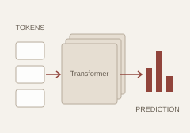
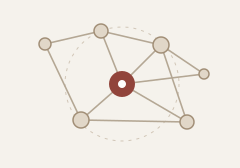
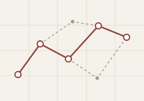

LLM Agents & Reliability
Studying failure modes, recovery, and evaluation of tool-using agents under changing environments.
I am an undergraduate student in Computer Science at Sichuan University .
My research interests center on LLM agents, especially how agents plan, remember, recover from failures, and reason over structured environments. I am particularly interested in agent reliability and evaluation, long-horizon planning and memory, and multi-agent systems.
Graph machine learning provides a methodological foundation for my work on structured state, memory, and reasoning. I am also interested in language-model training and systems as supporting tools for agent research.
Studying failure modes, recovery, and evaluation of tool-using agents under changing environments.
Exploring how agents maintain state, reuse experience, and adapt plans across long-horizon interactions.
Investigating structured state, graph-based representations, and coordination mechanisms for reliable reasoning.

Independent coursework Completed
Implemented core components of language modeling from scratch, including BPE tokenization, Transformer components, training utilities, and end-to-end model training in PyTorch.
Studied systems, scaling, data, and post-training, including reinforcement-learning-based optimization for language models and agents.

Independent Study / Structured Methods
Implemented GCN, GraphSAGE, and GAT in PyTorch Geometric and studied message passing, inductive learning, pooling, and graph-level evaluation.
I use graph-based representations as a foundation for thinking about structured state, memory, and coordination in agent systems.

Engineering / Project
Developed topology-aware mission-planning and dynamic replanning components for UAV-based powerline inspection, including route optimization, mission construction, and integration with inspection workflows.
Completed a small independent timing study based on AgentHijack, exploring within-step corruption timing in computer-use agents.
Completed an independent reproduction study of Guided Topology Diffusion (GTD) for multi-agent systems.
A regular paper was accepted to IEEE BIBM 2026.
Completed Stanford CS336: Language Modeling from Scratch, including Assignments 1–5.
MCM Meritorious Winner.
2026 IEEE International Conference on Bioinformatics and Biomedicine (IEEE BIBM 2026)
Regular Paper, Accepted